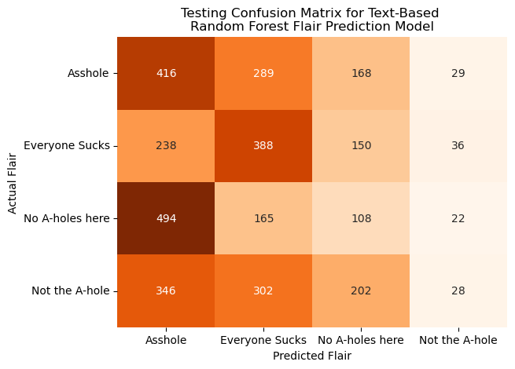

ML
Subreddit Prediction

Flair Text



Flair Engagement


Story Generation
In our project, we developed a story generation model using a recurrent neural network (RNN) model, which we built and trained using PySpark and PyTorch. To enhance the computation speed, we integrated CUDA into the process. Our data is the mix of top stories from various subreddits and popular books sourced externally, developed during the NLP portion of the project. The preprocessed portion of the dataset usable for training purposes is 1037 MB. We found that a smaller subset of 160.59 MB was adequate for the analysis.
The model’s architecture is based on a Long Short-Term Memory (LSTM) layer, which captures long-term dependencies in sequential data. In our setup, we defined hyperparameters such as the input size of 128, hidden state at 256, and used a two-layer LSTM. The model has 12,766,510 trainable parameters.
For the training process, we set the learning rate at 0.01, a maximum of 100 epochs, and a batch size of 64. To ensure the model didn’t overfit, we employed an early stopping mechanism with a patience of 5 epochs and a validation loss improvement threshold of 0.01. The Adam optimizer was chosen for optimization, paired with a cross-entropy loss function for calculating the model’s error rate. The total training time was 1h 41 mins.
The training and validation perplexities are shown in Figure 10:
To evaluate the model’s effectiveness, we focused on loss and perplexity. A lower perplexity value suggests a higher predictive accuracy of the model. The model achieved a test loss of 1.6227 and a perplexity value of 5.0667, indicating a strong performance in predictive capabilities.
We were ready to generate stories with the trained. Some examples are shown in Table 1:
| Prompt | Generated Text |
|---|---|
| Once upon a time | Once upon a time to of a cause the gachen friends these any olden lands. it was the school all as the sach could boypheal, and they letes saying cut that ended about the told the asking.the said she so a kyastellow specially will wrong me have a glories and how in s |
| The sun set over the ancient, whispering forest | The sun set over the ancient forest and the sating the told the thought the pressated the hassed has all she was hands and the and the and of didnt conday her that there you hands my like i was the and i was the told when and the put all into the done to the down the sately and stouse |
| The sound of sirens pierced the night | The sound of sirens pierced the night stack and the down, my fear that my bly and were expetes his slaring when it becheads icky that my feelt and want and contores she givated hours. we let me processings that i only and low that on a mord of the past finding to this because oulling th |
Although our model cannot yet generate cohesive stories, it’s important to recognize the success in the underlying process. The characters produced by the model consistently combine to form coherent words, an ability that demonstrates the model’s understanding of basic linguistic structures, a foundational step toward more complex story generation. This aspect of the model’s output aligns well with the objectives of our project.